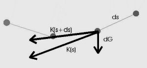

Mathematische Lösung
Mit Hilfe des physikalischen Modells gelingt es, eine Beziehung zwischen den infinitesimalen Grössen aufzustellen.

Zunächst sinkt die y-Koordinate der Kraft proportional zur durchlaufenen Kettenlänge s. Wir haben also
Ky = c + asDabei ist -a das Gewicht der Kette pro Längeneinheit. Die Konstante c bestimmt zusammen mit dem konstanten y-Anteil des Kraftvektors die Kraft im rechten Aufhängepunkt.
Wir setzen Kx = d
Weil die Kettenkurve und der Kraftvektor die gleiche Steigung haben, ergibt sich für die Gleichung y(x) der Kurve
y'(x) = \(\sf\dfrac{\sf dy}{\sf dx} = \dfrac{\sf c + as}{\sf d}\)Differenziert man auf beiden Seiten nach x, so erhält man mit einer positiven Konstanten k=a/d
y''(x) = \(\sf\dfrac{\sf d^2y}{\sf dx^2} = k\dfrac{\sf ds}{\sf dx}\)Wegen ds = \(\sf\sqrt{dx^2+dy^2}\) erhält man schliesslich die Differentialgleichung (in moderner Form geschrieben)
y''(x) = k\(\sf\sqrt{1+y'(x)^2}\)Die Lösung dieser Differentialgleichung für u=y' erfolgt mit Hilfe der Methode der Variablentrennung. Diese Methode taucht übrigens bei Bernoulli zum ersten Mal auf. Er schreibt (mit u=y')
\(\sf\dfrac{1}{\sf\sqrt{1+u^2}}\) du = kdxDann integriert er auf beiden Seiten mit den Worten "ergo & horum integralia aequantur", wovon unser Wort Integral kommt.
Es kommt hier nicht darauf an, diese Lösung analytisch zu finden. Man muss lediglich nachprüfen, dass die Funktionen
mit Gleichung
y(x) = A + \(\sf\bf\dfrac{1}{\sf k}\) cosh(k(x - B))
die Differentialgleichung in der Tat erfüllen.
Dabei liegt in x=B der tiefste Punkt (Scheitel) der Kette. Verschiebt man den Graph so, dass der Scheitel in (0,0) liegt, so sieht man, dass die Kettenkurve durch lineares Skalieren in der Tat in eine Kettenkurve mit anderer Konstante k übergeht. Sie erfüllt also unsere geforderten geometrischen Eigenschaften.
zum Inhaltsverzeichnis Kettenlinie
©1997 - 2026 www.mathematik.ch |🔍